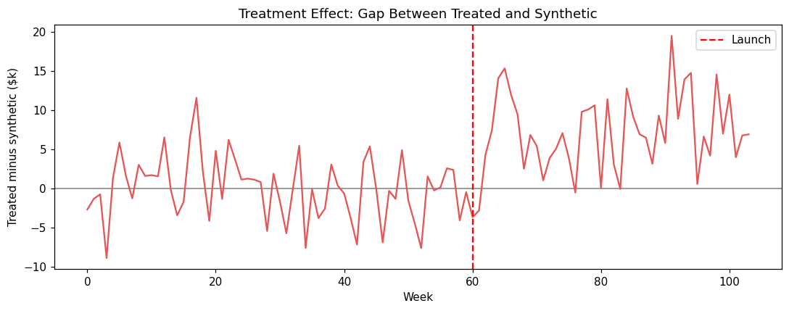
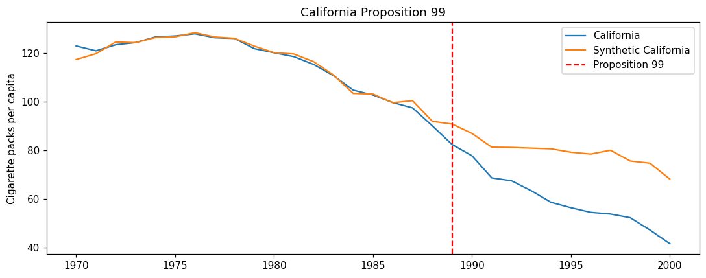

The Synthetic Control Method (SCM) is a powerful quasi-experimental technique for evaluating interventions when there is only one (or a few) treated units. It constructs a weighted combination of untreated donor units that reproduces the treated unit’s pre-intervention trajectory, then uses this “synthetic” unit as the counterfactual.
Overview
The Core Idea
When you have only one treated unit (e.g., a single country, state, or flagship store), standard DiD struggles because you can’t reasonably compare one unit to many controls. SCM solves this by creating a synthetic control unit — a weighted average of untreated donor units that matches the treated unit’s characteristics and pre-treatment outcomes as closely as possible.
The method works in three steps:
Construction: Find nonnegative weights (summing to 1) over donor units such that the weighted combination matches the treated unit’s pre-intervention outcomes (and optionally covariates)
Counterfactual: Project this weighted combination into the post-intervention period to estimate what would have happened without treatment
Effect: The gap between the treated unit’s actual post-intervention outcome and its synthetic control’s projected outcome is the treatment effect
Business Setting
SCM is ideal when:
You have one or a few treated units (a single market, country, or flagship location)
There is a pool of potential donor units that were not treated
You have pre-intervention data on both outcomes and covariates
The treated unit is not an extreme outlier relative to the donor pool
Common business examples:
A new policy tested in one state before nationwide rollout
A store format piloted in a single flagship location
A marketing campaign launched in one city
A product feature tested in one country
The Identifying Assumption
SCM’s identifying assumption is: the pre-period weighting that reproduces the treated unit’s history would have continued to reproduce it absent treatment.
This is more transparent than parallel trends in DiD because you can visually inspect how well the synthetic unit tracks the treated unit in the pre-period. The quality of this pre-period fit is the license to interpret the post-period gap.
Why Business People Like SCM
SCM has several features that make it particularly persuasive to non-technical stakeholders:
Transparency: The counterfactual is interpretable — “Synthetic Chicago = 40% Minneapolis + 35% Detroit + 25% Cleveland”
Visual: The result is a picture (treated vs. synthetic over time), not just a coefficient
Intuitive: If the synthetic unit closely tracks the treated unit before treatment, it’s reasonable to use it as a counterfactual after
Case-study feel: SCM naturally produces compelling narratives about specific interventions
Key Advantages
Handles single treated units: Works when DiD would be inappropriate
Transparent weights: You can see exactly which donors contribute to the synthetic control
No extrapolation: Weights are nonnegative and sum to 1, so the treated unit must lie within the donor pool’s convex hull
Permutation inference: Uses placebo tests (applying SCM to each donor) to construct p-values without distributional assumptions
Implementation in Python
SyntheticControl chooses nonnegative donor weights that sum to one and match the treated unit before the intervention. The reported effect is the average post-period gap. The interval is a Bayesian bootstrap of the pre-period rows.
The setup matches the other PyCausalML tutorials: find the repository, import the package, and install the editable checkout only if the import fails.
Set Up
Code
import subprocessimport sysfrom pathlib import Pathdef _repo_root() -> Path: here = Path.cwd().resolve()for cand in [here, *here.parents]:if (cand /"pyproject.toml").is_file() and (cand /"src"/"pycausalml").is_dir():return candraiseFileNotFoundError("PyCausalML repository was not found. Run this notebook from the repository." )root = _repo_root()try:import pycausalml # noqa: F401print("PyCausalML ready.")exceptImportError: subprocess.check_call( [sys.executable, "-m", "pip", "install", "-q", "-e", f"{root}[plot]"], )print("PyCausalML installed.")print("Repository:", root)
The weights show how much each donor market contributes to the synthetic control. For example, if Market 4 has weight 0.35, it means the synthetic control is 35% composed of Market 4’s trajectory.
Visualizing the Results
The most important diagnostic is the path plot, which shows how well the synthetic control tracks the treated unit.
Pre-period (weeks 0-59): The synthetic control should closely track the treated market
Post-period (weeks 60-103): A gap emerges between treated and synthetic — this is the estimated treatment effect
If the pre-period fit is poor, stop — the synthetic control is not a valid counterfactual.
Code
gap = treated_path - synth_pathfig, ax = plt.subplots(figsize=(10, 4))ax.axhline(0, color="gray", lw=1)ax.plot(weeks, gap, color="#E45756")ax.axvline(treat_week, color="red", ls="--", label="Launch")ax.set_xlabel("Week")ax.set_ylabel("Treated minus synthetic ($k)")ax.set_title("Treatment Effect: Gap Between Treated and Synthetic")ax.legend()fig.tight_layout()plt.show()

The gaps plot shows the treatment effect over time. It should be near zero in the pre-period (indicating good fit) and show the effect in the post-period.
Inference: Placebo-in-Space Permutation
With only one treated unit, standard errors don’t apply. SCM uses permutation inference: apply the same procedure to every donor as if it were treated, then compare the real effect to the distribution of placebo effects.
Code
wide = ( mkt_long.pivot(index="week", columns="market", values="revenue") .sort_index())pre_w = wide.loc[wide.index < treat_week]post_w = wide.loc[wide.index >= treat_week]def post_mean_gap(unit): others = [column for column in wide.columns if column != unit] weights_u = SyntheticControl._weights(pre_w[others].to_numpy(), pre_w[unit].to_numpy())returnfloat(np.mean(post_w[unit].to_numpy() - post_w[others].to_numpy() @ weights_u))placebo_gaps = pd.Series( {unit: post_mean_gap(unit) for unit in donor_markets}, name="placebo_gap",)print(placebo_gaps.round(2))fig, ax = plt.subplots(figsize=(8, 4))ax.hist(placebo_gaps, bins=8, color="#4C78A8", edgecolor="white", label="Donor placebos")ax.axvline(scm.effect_, color="#E45756", lw=2, label="Treated market")ax.set_xlabel("Post-period average gap")ax.set_title("Placebo-in-space")ax.legend()fig.tight_layout()plt.show()
The p-value indicates how unusual the real effect is compared to the placebo distribution. A low p-value (e.g., < 0.05) suggests the effect is unlikely to occur by chance.
Diagnostics and Best Practices
1. Pre-Period Fit is Critical
The single most important diagnostic is the pre-period fit. If the synthetic control cannot track the treated unit before treatment, it cannot be trusted as a counterfactual after treatment.
Rule of thumb: Visual inspection should show close tracking in the pre-period. Consider quantitative metrics like pre-period mean squared prediction error (MSPE).
2. No Extrapolation
SCM weights are constrained to be nonnegative and sum to 1. This means the treated unit must lie within the donor pool’s convex hull. A flagship market that is much larger than all donors cannot be synthesized well.
Solutions: - Scale outcomes (e.g., revenue per store) - Use augmented SCM (adds a bias-correcting outcome model) - Exclude extreme outliers from the donor pool - Consider alternative methods (DiD with multiple controls)
3. In-Time Placebo
Test the method by ending the data before the real intervention and imposing a fake treatment date. The “effect” should be near zero.
Implementation: Run SCM with a fake treatment week (e.g., week 40) using only data up to week 50. If you find a significant effect, the method is misspecified.
4. Leave-One-Out
Drop the highest-weight donor and refit. Conclusions should not hinge on a single donor. If results change dramatically, the analysis is fragile.
5. Don’t Cherry-Pick the Donor Pool
Pre-specify the donor pool before seeing results. Changing the donor pool after seeing the effect is a form of p-hacking.
Best practice: Document the donor pool selection criteria in an analysis plan before running the analysis.
6. Include Covariates When Available
While outcome matching is the primary criterion, including pre-treatment covariates (e.g., market size, demographics) can improve the synthetic control’s realism and transparency.
Real-World Data
The series below is a real dataset shipped with CausalPy (PyMC Labs), under the Apache License 2.0. The files live in causalpy/data.
@software{causalpy,
author = {{PyMC Labs}},
title = {CausalPy: Causal inference for quasi-experiments in Python},
url = {https://github.com/pymc-labs/CausalPy},
year = {2026}
}
PyCausalML fits the estimator. CausalPy is the data source. When CausalPy is installed, causalpy.load_data reads the packaged file. Otherwise the notebook reads the same CSV from that GitHub directory.
California Proposition 99 raised the cigarette tax in 1989. The series is annual per-capita cigarette sales for 39 states, 1970–2000, from Abadie, Diamond, and Hainmueller (2010), distributed with CausalPy as california_prop99. California is the treated state. The other states are the donor pool.
Code
CAUSALPY_FILES = {"banks": "banks.csv","covid": "deaths_and_temps_england_wales.csv","drinking": "drinking.csv","risk": "AJR2001.csv","schoolReturns": "schoolingReturns.csv","california_prop99": "california_prop99.csv",}def load_causalpy(name: str) -> pd.DataFrame:"""Load a CausalPy example dataset. Uses causalpy.load_data when that package is installed. Otherwise reads the same CSV from the CausalPy GitHub data directory. """try:import causalpy as cp frame = cp.load_data(name)print(f"Loaded {name!r} with causalpy.load_data. Shape {frame.shape}.")return frameexceptImportError: url = ("https://raw.githubusercontent.com/pymc-labs/CausalPy/main/causalpy/data/"+ CAUSALPY_FILES[name] ) frame = pd.read_csv(url)print(f"CausalPy is not installed. Loaded {name!r} from")print(url)print("Install the package with: pip install 'pycausalml[causalpy]'")print(f"Shape {frame.shape}.")return frameprop = load_causalpy("california_prop99").set_index("Year").sort_index().astype(float)treated_name ="California"pre_years = prop.index <1989donors = prop.drop(columns=[treated_name])scm_ca = SyntheticControl(n_boot=40, random_state=0)scm_ca.fit( donors.loc[pre_years].to_numpy(), prop.loc[pre_years, treated_name].to_numpy(), donors.loc[~pre_years].to_numpy(), prop.loc[~pre_years, treated_name].to_numpy(),)ca_weights = pd.Series(scm_ca.weights_, index=donors.columns, name="weight")print(ca_weights.sort_values(ascending=False).head(8).round(3))print("\nAverage post-1988 gap (packs per capita):")print(pd.Series(scm_ca.summary()).round(2))synth_pre = donors.loc[pre_years].to_numpy() @ scm_ca.weights_fig, ax = plt.subplots(figsize=(10, 4))ax.plot(prop.index, prop[treated_name], label="California")ax.plot(list(prop.index[pre_years]) +list(prop.index[~pre_years]), np.concatenate([synth_pre, scm_ca.synth_post_]), label="Synthetic California",)ax.axvline(1989, color="red", ls="--", label="Proposition 99")ax.set_ylabel("Cigarette packs per capita")ax.set_title("California Proposition 99")ax.legend()fig.tight_layout()plt.show()
CausalPy is not installed. Loaded 'california_prop99' from
https://raw.githubusercontent.com/pymc-labs/CausalPy/main/causalpy/data/california_prop99.csv
Install the package with: pip install 'pycausalml[causalpy]'
Shape (31, 40).
Utah 0.394
Montana 0.232
Nevada 0.205
Connecticut 0.109
New Hampshire 0.045
Colorado 0.015
Illinois 0.000
Delaware 0.000
Name: weight, dtype: float64
Average post-1988 gap (packs per capita):
estimate -19.510
ci_lower -41.710
ci_upper -18.810
posterior_mean -34.490
dtype: float64

Common Pitfalls
1. Poor Pre-Period Fit
If the synthetic control doesn’t track the treated unit well before treatment, the post-period gap is meaningless.
Solution: Improve donor pool, add covariates, or use a different method.
2. Treated Unit is an Outlier
If the treated unit is extreme relative to donors (e.g., a megacity compared to small towns), no weighted combination can match it well.
Solution: Scale outcomes, use augmented SCM, or accept that SCM is not appropriate.
3. Too Few Donors
With very few donors, the synthetic control may be unstable or overfit to specific donors.
Solution: Use at least 5-10 donors when possible.
4. Contemporaneous Shocks
If something else affects the treated unit at the same time as the intervention, SCM will attribute the combined effect to the treatment.
Solution: Check for co-interventions and use multiple methods to triangulate.
5. Short Pre-Period
A short pre-period makes it hard to assess fit and may miss pre-existing trends.
Solution: Use at least 2-3 pre-intervention periods (years for annual data, months for monthly data).
When to Use SCM
SCM is the right choice when:
You have one or few treated units
There is a pool of untreated donors
The treated unit is not an extreme outlier relative to donors
You have sufficient pre-period data to assess fit
You value transparency and visual communication
Consider alternatives when:
Many treated units → DiD
Treatment assigned by threshold → RDD
Treated unit is extreme outlier → Scale outcomes or use alternative methods
No suitable donor pool → ITS, CausalImpact
Summary
Synthetic Control is a powerful method for case-study causal inference with single treated units. Its strength lies in the transparency of the counterfactual construction and the intuitive visual presentation of results.
Key takeaways:
SCM constructs a weighted combination of donors to match the treated unit’s pre-intervention trajectory
Pre-period fit is the critical diagnostic — if it’s poor, stop
Use permutation inference (placebo tests) for statistical significance
Don’t cherry-pick the donor pool — pre-specify it
Be transparent about limitations when the treated unit is an outlier
Combine with other methods (DiD, placebo tests) for stronger conclusions